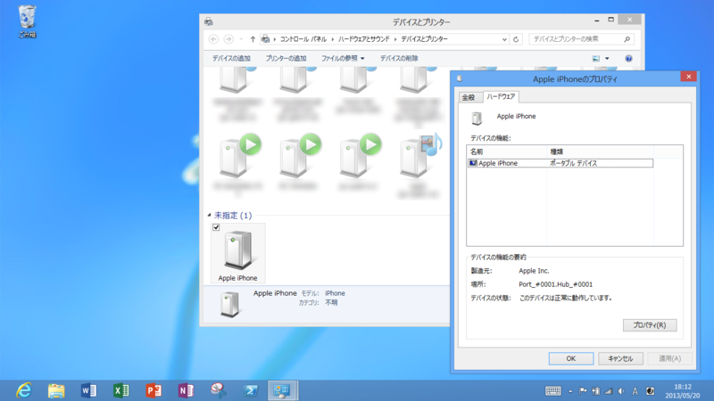

Surface RT：iPhone 挿したらどうなるの？
公開日：
@daruyanagi なるほどね。あと、これは知ってればでいいんだけど、iPhoneつなぐとどうなるんだろ？カメラデバイスとして認識するんかな？
試してみた。
結果

“ポータブルデバイス”として認識された。
エクスプローラーで開いたり、写真のインポートが行えるようだ。Surface RT には Camera Codec Pack（窓の杜 - 【NEWS】MS製の写真管理ソフト「Windows Live フォト ギャラリー」がRAW画像に対応）がプリインストールされているので、RAW 画像も閲覧できる。ただ、その場合は容量の大きなモデルを選んだ方がいいかもしれないね。
P.S.
ぇ、Windows Phone 7.x を繋げたらどうなるかだって？ そんなこと聞かないでくれたまえ。